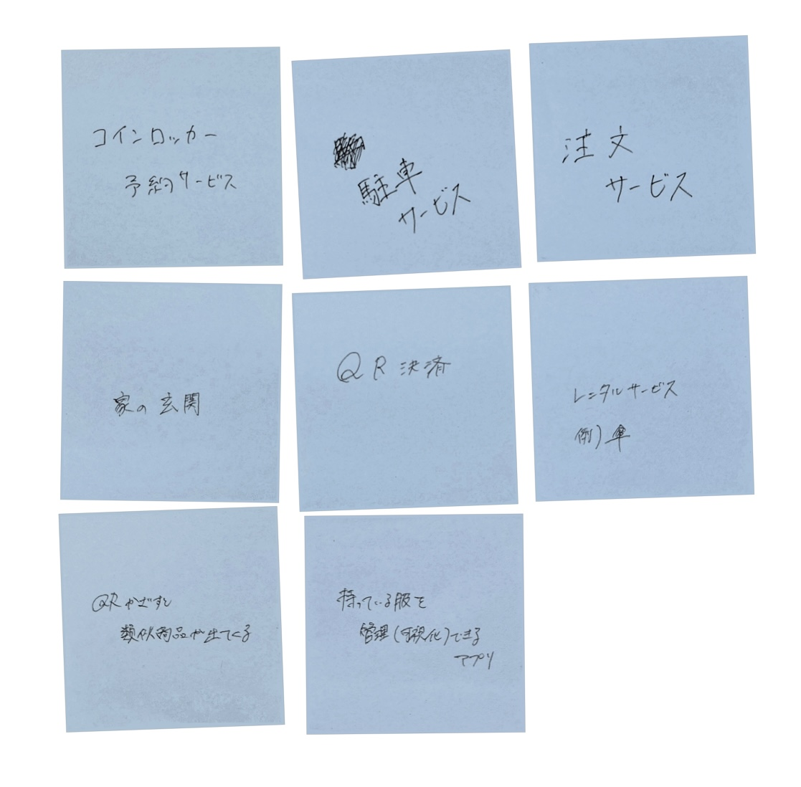
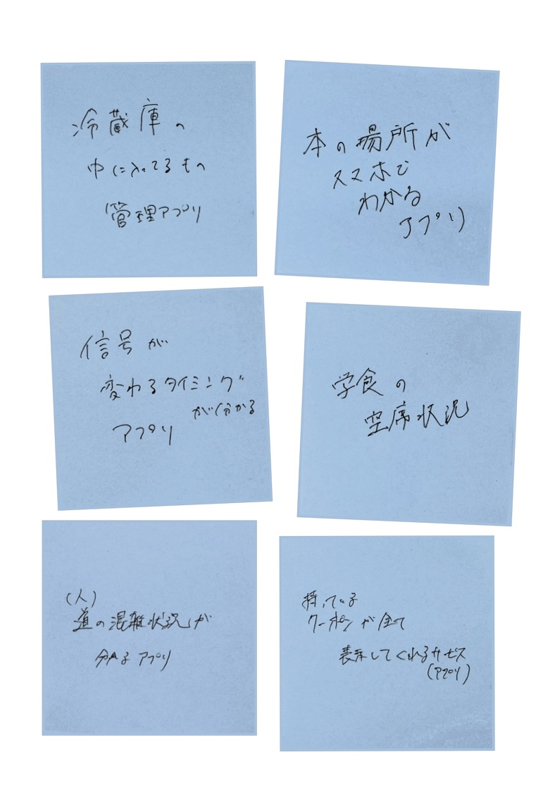
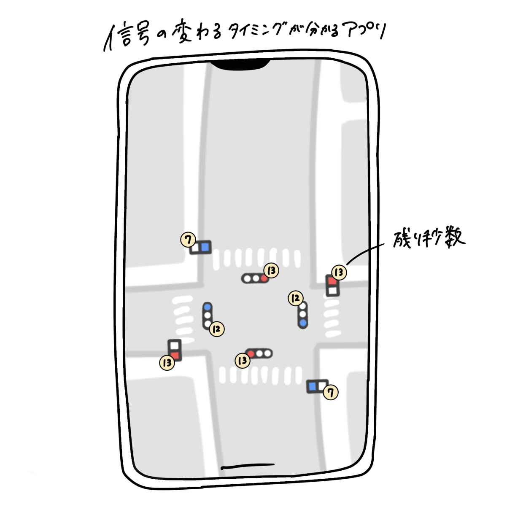

第２回 IoTに関して
IoTとは何か
Internet of Thingsの略称で、あらゆるモノをインターネットに接続する技術であり、日本語では「モノのインターネット」と訳される。
IoTの身近例は、YouTubeなどインターネット上のコンテンツを利用できるテレビや、インターネット経由で映像を確認できる監視カメラなどがあげられる。
遠隔スイッチ実験
IoT(遠隔操作)で何ができそうか？
グループワーク
現在存在しているIoTサービス

QRコード決済、駐車サービスなど
グループで考えたIoTサービス

学食の空席状況が分かるアプリ、信号の変わるタイミングが分かるアプリなど
自分で考えたアイデア
信号機が変わるタイミングが分かればいいなと思ったので考えた
信号機を管理しているサーバーとアプリが連動して地図上で信号があと何秒で変わるのかをアプリで分かるようにできればいいなと思う。

IoTとは？意味・定義 | IT用語集 | docomo business Watch